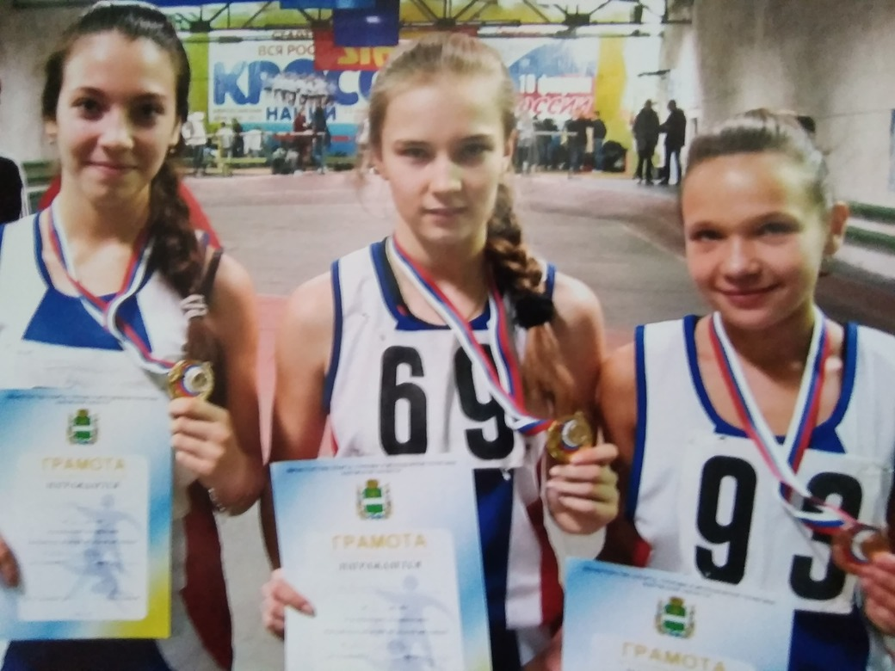
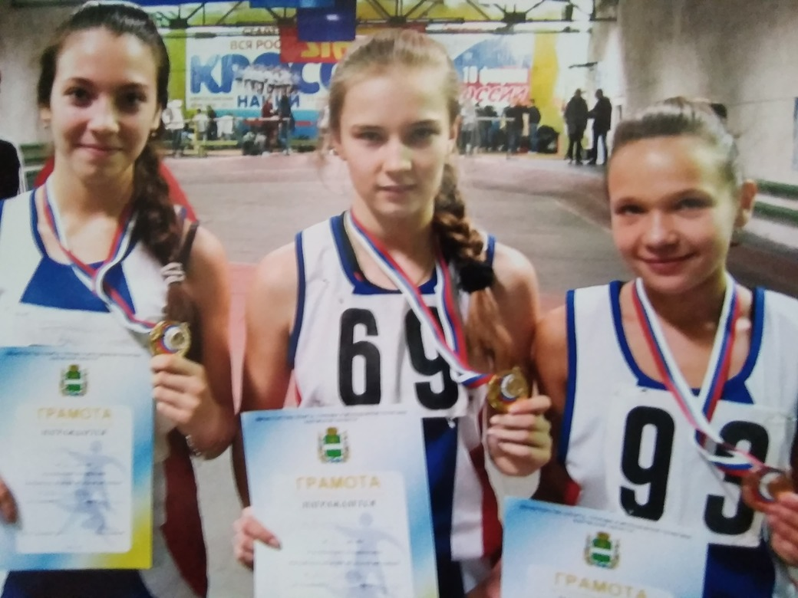

My sport is
Athletics
my path is 7 years old
Athletics is a complex sport that includes various types of disciplines. She is rightfully considered the queen of sports, not without reason, two of the three appeals in the motto “Faster, higher, stronger” can be thoughtlessly attributed to the athletics disciplines. Track and field athletics formed the basis of the sports program of the first Olympic Games. Athletics managed to win their positions due to the simplicity and accessibility.
Official races for the 60-meter distance are held in enclosed spaces on a straight stretch of the 200-meter distance or a separate running segment of the track.
It is held at summer stadiums on a straight section of the 400-meter track. It is considered one of the most prestigious disciplines, both in athletics and in sport in general.
It is held at summer and winter stadiums. The distance includes the passage of a single curve and then a straight stretch.
It is held in summer and winter stadiums. The so-called long sprint. Requires speed endurance and the ability to correctly distribute the forces of the distance.
 

The beginning of my sports career began at the age of 12. I was a sports kid, I loved outdoor games, I loved physical education. Before school competitions, my physical education teacher suggested that I go to a training session at our House of Sport. I agreed. At that time I did not know how it would turn out for me that this day would change my whole life. The first day of training was not difficult. With each workout I liked more and more, this atmosphere was dragging me down. I gave 100% and my coach saw it. And then came my first competition. I was very afraid, but my trainer and teacher believed in me. Then I said, "I will win." Hooray! my first win I did not believe my happiness. From this day began my new life. After there were other competitions, in another city, where I met stronger rivals, who motivated me to work even more so that I could fight them at a high level. Not a few years passed, I took the first places, was at prestigious competitions all over Russia, but all fairy tales have an end, and my not happy ending. The trauma has been recovering for a long time. After there were no results that were before. But I did not give up, I continued training and now still in my life there is athletics.
01.
First day of training
02.
First competition
03.
First rank
04.
First wins
 m o r e
m o r e